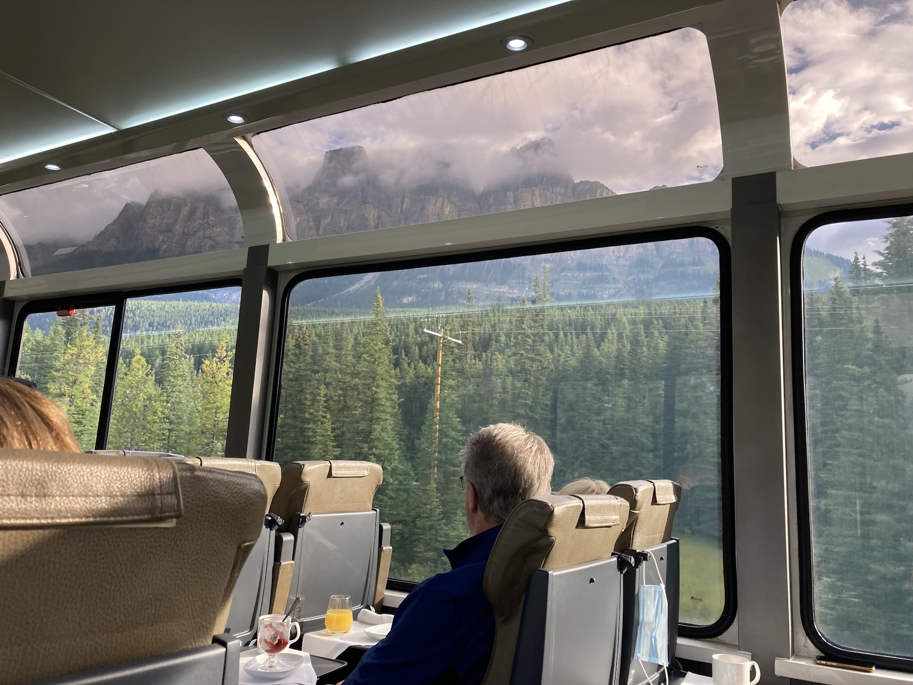
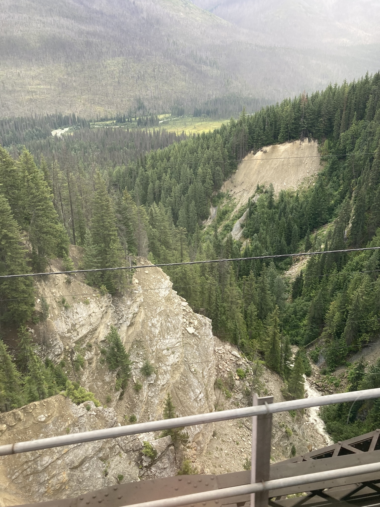

Today, Friday 7th August, was our main reason for making the trip apart from Seeing Victoria and our grandchildren. It was an early start (7am). Then after some confusion in the hotel lobby (there was a large tour group of Australians as well as our group) we boarded the coach to take us to Banff station to board the Rocky Mountaineer.
After a welcome by the staff we had breakfast and then had a short stop at Lake Louise to pick up a few more passengers. Then, on our route to Kamloops, we saw a lot of fir trees, a lot of rivers and a lot of mountains, but no wildlife. When you are moving, all fir trees look much the same. The rivers were all a cloudy light blue, due to 'glacial flour', so all looked the same. After seeing a few mountains, they all looked much the same! However, we were given a newspaper that had a map of the route and notes about various points.
The route mainly followed the banks of rivers, initially the Columbia River that drains into the Atlantic and then, after we had crossed the divide (where there was a small monument beside the track), a number of rivers (Eagle, South Thompson, Thompson) and finally the Fraser River that flows into the Pacific at Vancouver. However we spent quite a long time following the shore of Shuswap Lake and then Little Shuswap Lake.
At Kamloops we were bussed to our hotel. We had already been checked in and our cases were in our rooms. It was all very efficient.
The Canadian Pacific Railway was completed in 1885, but was a single track with passing places, following the banks of rivers, often crossing to the other bank. Later, what is now the Canadian National railway was built along the opposite bank. Nowadays the two railways have an agreement that, from Kamloops, one track is used for west-bound trains and the other for east-bound trains. The Rocky Mountaineer is the only passenger train using the route.
We had another early start on the Friday and then we were back on the rails. Our train had been joined to one from Jasper, so was very long. The scenery was very different however, starting in a semi-desert region and then moving on through the coastal mountains, which were very wooded.
We did, however, see more wildlife. The first couple of ospreys and bald eagles was quite exiting. By the time that we got to the 50th the sight was quite ordinary.
The Fraser River did get quite turbulent, particularly going through 'Hell's Gate', and we did see some white-water rafters.
The valley then became very wide and we could see the coastal mountains in the distance, still with snow on them.
Again we had breakfast and lunch on the train, followed by a very slow entrance into Vancouver. Finally, a coach took us to our hotel, which was very good. Although we were only on the 10th floor of 18, Angela didn't like the getting close to the windows, which went down to the floor.
Overall we decided that the journey was interesting, but there was too much sitting down over the two days and the repetition of trees, rivers and mountains became a bit boring.
| Return to Canada &: USA | © David James 2025 Last updated: 1st September 2025 |